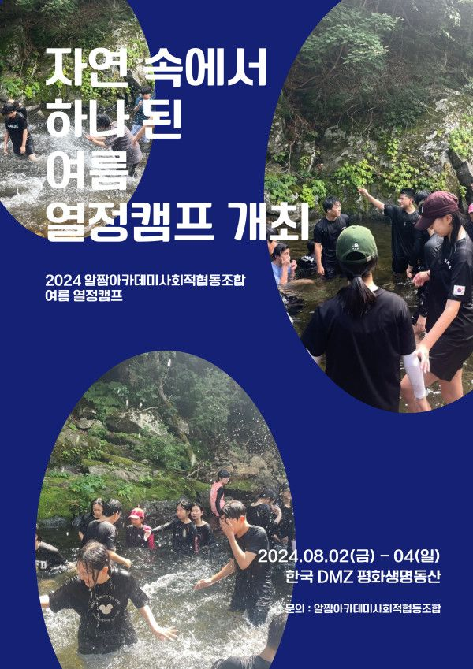
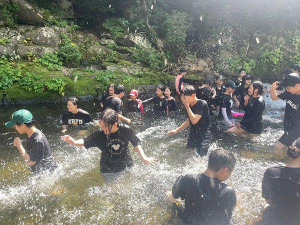
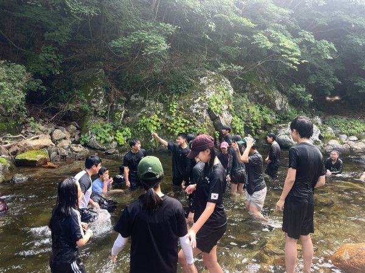
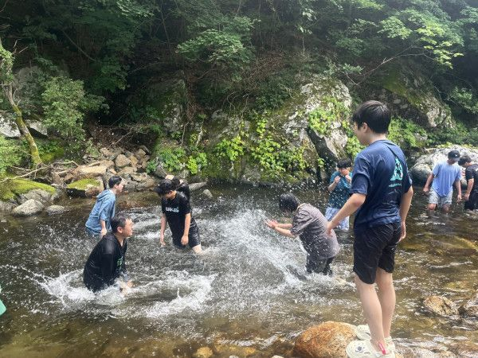

(사진설명 : 2024년 알짬아카데미 여름 열정캠프 활동모습)
알짬아카데미사회적협동조합이 8월 2일(금)부터 4일(일)까지 초등학교 5학년부터 고등학교 2학년까지 80여명의 학생들과 <2024 여름 열정캠프>를 개최했습니다.
아동・청소년의 권리를 주제로 한 토론대회와 놀이캠프를 통해 학생들은 청소년기 성장통을 스스로 극복해 보는 시간을 가졌는데요,
이번 캠프는 생태환경과의 공존을 추구하는 한국 DMZ 평화생명동산에서 진행되었습니다.
쉽게 볼 수 없는 반딧불이를 목격하고, 백두대간과 DMZ가 만나는 향로봉 계곡에서 물놀이를 즐기며 자연을 만끽하는 시간을 보냈습니다.
알짬아카데미사회적협동조합 어성민 부이사장은
"각자의 역량이 모여 협력적인 결과를 펼치는 경험을 했다는 점에서 서로가 서로에게 소중한 존재임을 깨달을 수 있는 계기가 되길 바란다"고 밝혔습니다.
한편, 알짬아카데미사회적협동조합은 원주, 춘천 지역을 기반으로 매주 학습을 진행하고 있습니다.
2023년 '나의 고유성을 발견하고, 자신의 삶과 세상을 성장시키는 학습문화공동체'를 비전으로 알짬아카데미사회적협동조합을 설립했습니다.
알짬아카데미에 대한 더 자세한 정보는 아래 링크를 참조하세요!
http://www.wjcoop.or.kr/bbs/board.php?bo_table=wonju_living&wr_id=94